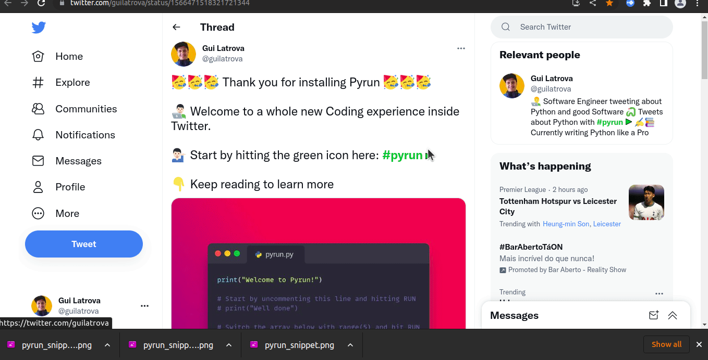

Installing modules
Whenever you import some module, Pyrun will attempt to auto install it for you.

Supported packages
Pyodide comes with many popular packages like pandas 🐼 and numpy.
You can also try to import other packages, they will be installed with micropip.
Note that not all modules are compatible with Pyodide like requests.
For such modules you need to find alternatives.
Here's an example to replace requests:
js_fetch.py
from js import console, fetch
async def print_pokemon_data(pokemon: str):
response = await fetch(f"https://pokeapi.co/api/v2/pokemon/{pokemon}")
parsed = await response.json()
pokemon_data = parsed.to_py()
move_count = len(pokemon_data["moves"])
poke_types = []
for poke_type in pokemon_data["types"]:
poke_types.append(poke_type["type"]["name"])
print(f"{pokemon.title()} of type(s) {poke_types} has {move_count} moves!")
await print_pokemon_data("blaziken")